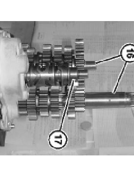
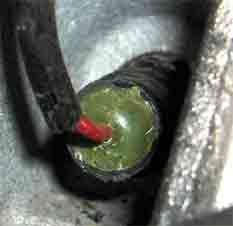
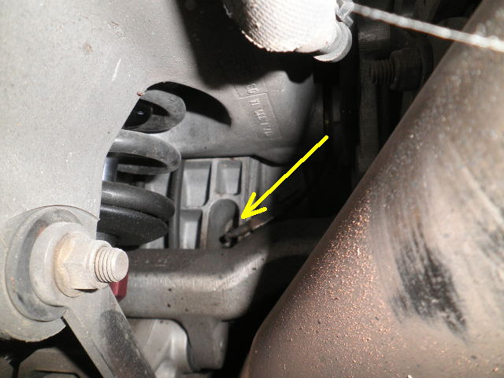
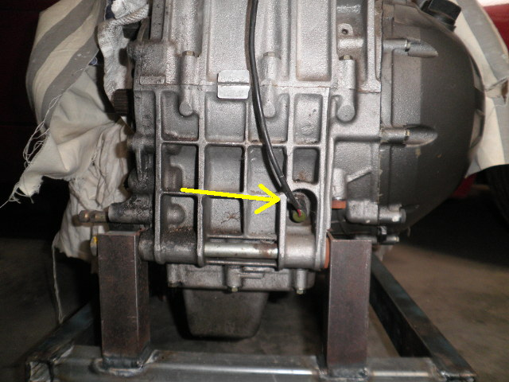
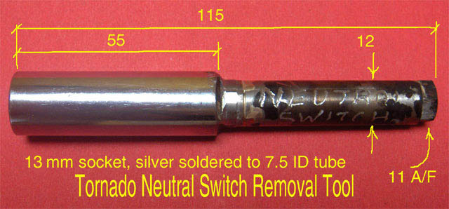

The neutral switch is operated by a cam lobe at the end of gear selector shaft - 17 in the top left picture.
|  |  |
| Gearbox viewed from the rear |
The actual lobe isn't in view because the gearbox isn't set in neutral, but you can see the potential for damage to the switch, if the gearbox is removed / replaced while the shaft is in the wrong position. The manual recommends selecting 4th gear for removal and replacement, or (better yet), removing the neutral switch completely.
|  |  |
If you look at the picture of the actual switch, it's hard to see the flats of the 13mm hex at the base of the switch. It is obscured by a polypropylene tube, which has been resin filled to protect the connection wire, which has been soldered to the switch terminal. The presence of the wire and the tube covering it, makes it extremely difficult to fit a socket to the switch base.
To get around this, I cut the wire near the end of the switch, then twisted the poly tube until the wire
strands broke off at the switch terminal. The switch itself is very robust - it won't be damaged by doing
this. With the tube removed, the hex was visible, but there's still not a lot of room to insert a standard
tool, so I made a "special".

This allowed access past the swing arm, and inside the switch well.
The broken wire was replaced with a short wire soldered to the terminal, covered with heatshrink. The other end of the wire had a 1/4" spade terminal fitted. The mating part was fitted to the cut wire, for reconnection to the switch circuit.
Many Tornado's suffer from the neutral switch remaining activated, once a gear is selected. This is because the switch action is not smooth. It tends to bind on itself, if pressed too hard.
This is a safety issue, as the electrical system will not detect the sidestand position, while it senses that the gearbox is in neutral. It is also a defectable offence in Australia.
The solution to this problem, is two-fold :-